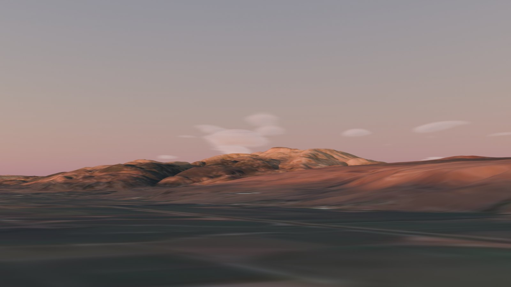
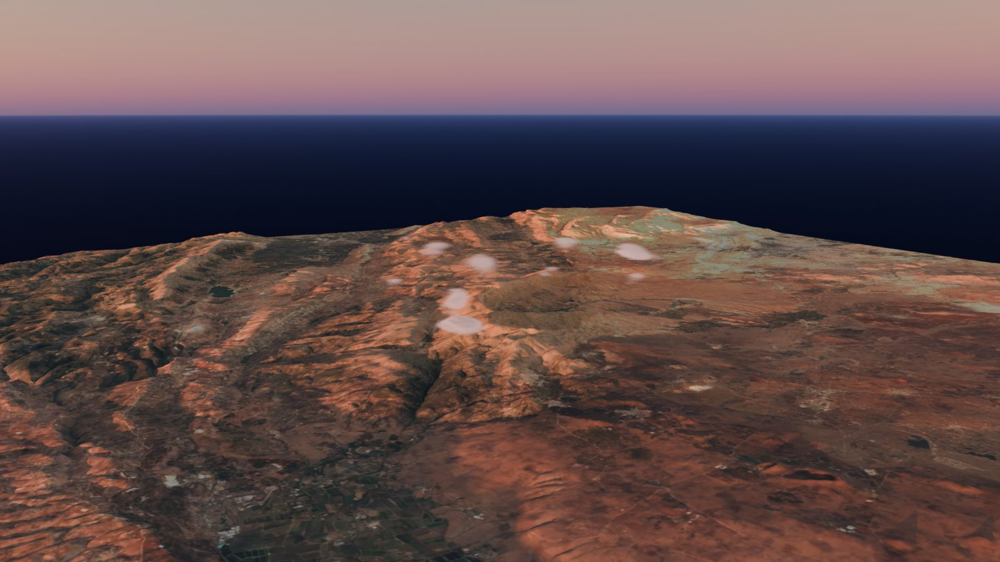

פרק 1 מתוך 10
מה רואים בתמונה
לעומק: המספרים והפיזיקה
חבילת אוויר שהתעבתה (בתוך הענן)
אוויר לח שעוד לא הגיע לרוויה
אוויר יבש
רוטור: הרוח ליד הקרקע מתהפכת
על ההדמיה
הטופוגרפיה אמיתית (נתוני גובה SRTM, רזולוציה 125 מ'). הגלים מחושבים לפי תורת גלי הרים הלינארית, תלת-ממדית ולא-הידרוסטטית, על פרופיל האטמוספרה שנמדד בבית דגן (רדיוסונדה 40179, 19/11 23:05 UTC, ורוחות 12Z). עננים נוצרים היכן שההרמה של קו זרם עולה על ההרמה שדרושה לרוויה בשכבה שממנה הוא הגיע. המרקם, האפייה וההדמיה הקולנועית נבנו ב-Blender.
מגבלות: המודל לינארי ולא מדמה ערבול, רוטורים אמיתיים או צמיחת ענני ערמה. עוצמת החסימה ותוספת הלחות בצפון מכוילות לתצפית.

